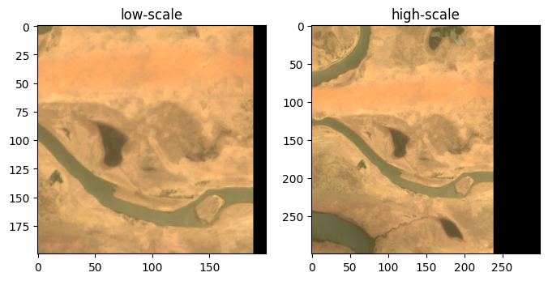
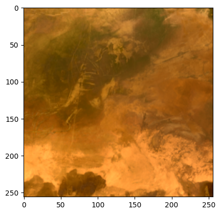
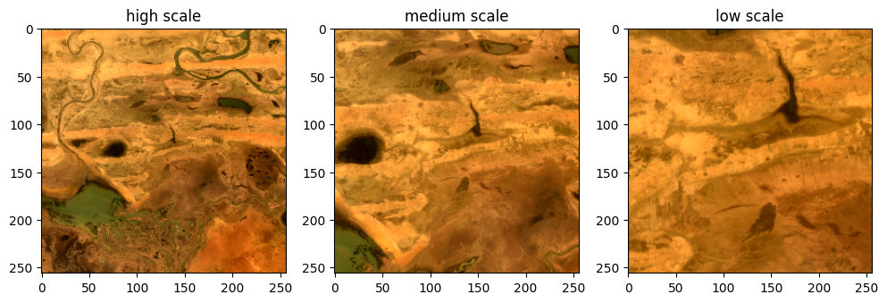

Convert image to patch.
import os
from pyrsimg import readTiff
from pyrsimg import imgShow, imsShow
from pyrsimg import img2patch
from pyrsimg import crop2size, crop2extent
import matplotlib.pyplot as plt
import numpy as np
root_path = os.getcwd().split('pyrsimg')[0] + 'pyrsimg'
path_img = root_path + '/docs/source/examples/data/l8_scene_05.tif'
path_truth = root_path + '/docs/source/examples/data/l8_scene_05_truth.tif'
1. Read the remote sensing image.
l8_img = readTiff(path_img)
l8_truth = readTiff(path_truth)
l8_img.array.shape
/Users/luo/miniconda3/envs/venv-pyrsimg/lib/python3.9/site-packages/osgeo/gdal.py:287: FutureWarning: Neither gdal.UseExceptions() nor gdal.DontUseExceptions() has been explicitly called. In GDAL 4.0, exceptions will be enabled by default.
warnings.warn(
(1410, 1690, 6)
2. Visualize the image.
fig, ax = plt.subplots(1,2,figsize=(10,4))
imgShow(l8_img.array, ax=ax[0])
ax[1].imshow(l8_truth.array)
ax[0].set_title('image')
ax[1].set_title('groud truth')
Text(0.5, 1.0, 'groud truth')
3. Convert the full image to multiple patches.
3.1 Convert image to patches.
imgPat_ins = img2patch(img=l8_img.array, patch_size=200, edge_overlay = 30)
patch_low_list = imgPat_ins.toPatch()
print('The number of patches from image:' ,len(patch_low_list))
The number of patches from image: 99
3.2. Convert image to higher-scale patches.
patch_high_list = imgPat_ins.higher_patch_crop(higher_patch_size=300)
3.3. Check the converted multiscale patches.
i_img = 20
fig, ax = plt.subplots(1, 2, figsize=(8,4))
imsShow(img_list=[patch_low_list[i_img], patch_high_list[i_img]], \
img_name_list=['low-scale', 'high-scale'], clip_list=[2,2])

4. Crop image.
4.1 Image cropping with specific size
img2size = crop2size(img=l8_img.array, channel_first=False)
patch = img2size.toSize(size=(256,256))
imgShow(patch)

4.2. Image cropping with multiscale sizes.
fig, ax = plt.subplots(1,3,figsize=(12, 4))
patches = img2size.toScales(scales=(1024,512,256))
imsShow(img_list=patches, img_name_list=['high scale', 'medium scale', 'low scale'])

4.3. Image cropping with specific extent
img2extent = crop2extent(extent=[368155.0, 391855.0, 1683985.0, 1706285.0])
patch_extent = img2extent.img2extent(path_img=path_img)
fig, ax = plt.subplots(1,2,figsize=(10,5))
imgShow(img=l8_img.array, ax=ax[0])
ax[0].set_title('The original image')
imgShow(patch_extent, ax=ax[1])
ax[1].set_title('The croped image')
Text(0.5, 1.0, 'The croped image')